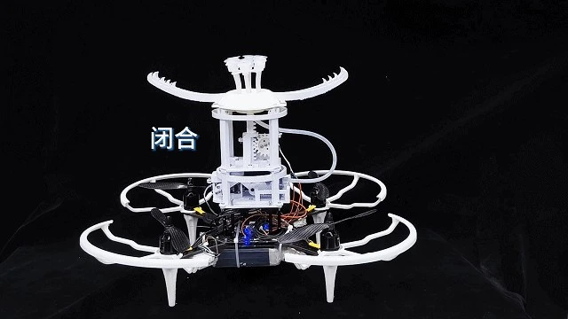

PUBLICATION / FIRST AUTHOR
水下软体抓取手
研究现状及应用展望
水下无人系统学报 · 2025
33(5): 769–779
梳理驱动方式、仿生设计、刚度调节与多模态抓取，讨论水下柔性操作的应用与发展方向。
阅读论文 ↗
01 / SELECTED WORK
从物理结构到智能系统，
探索可感知、可行动的机器人。
02 / ENGINEERING CONNECTIONS
技术的价值，
在于它如何服务一个完整的系统。
03 / RESEARCH & MILESTONES
论文、专利与竞赛，
记录不同阶段的研究与实践。
PUBLICATION / FIRST AUTHOR
水下无人系统学报 · 2025
33(5): 769–779
梳理驱动方式、仿生设计、刚度调节与多模态抓取，讨论水下柔性操作的应用与发展方向。
阅读论文 ↗第三发明人 · ZL 2025 1 1774088.7
团队获奖 · 科研与创新实践
材料列明个人获奖排名均为第 1
EMG 仿生义肢项目 · 个人排名第 3
04 / A LITTLE ABOUT ME
我是吕怡纬，郑州大学人工智能拔尖创新班本科生，已推免至中国科学院大学计算机应用技术专业。我的研究与工程兴趣集中在机器人、智能感知与具身交互。
我感兴趣的是跨越边界的工程问题：从水到空，从信号到动作，从理论分析到一个真实的原型。过往项目也让我接触到机器人导航、语言与表情交互，以及团队研发与竞赛实践。
LET’S BUILD SOMETHING THAT MOVES.
欢迎交流机器人、算法与智能硬件的实习及工作机会。